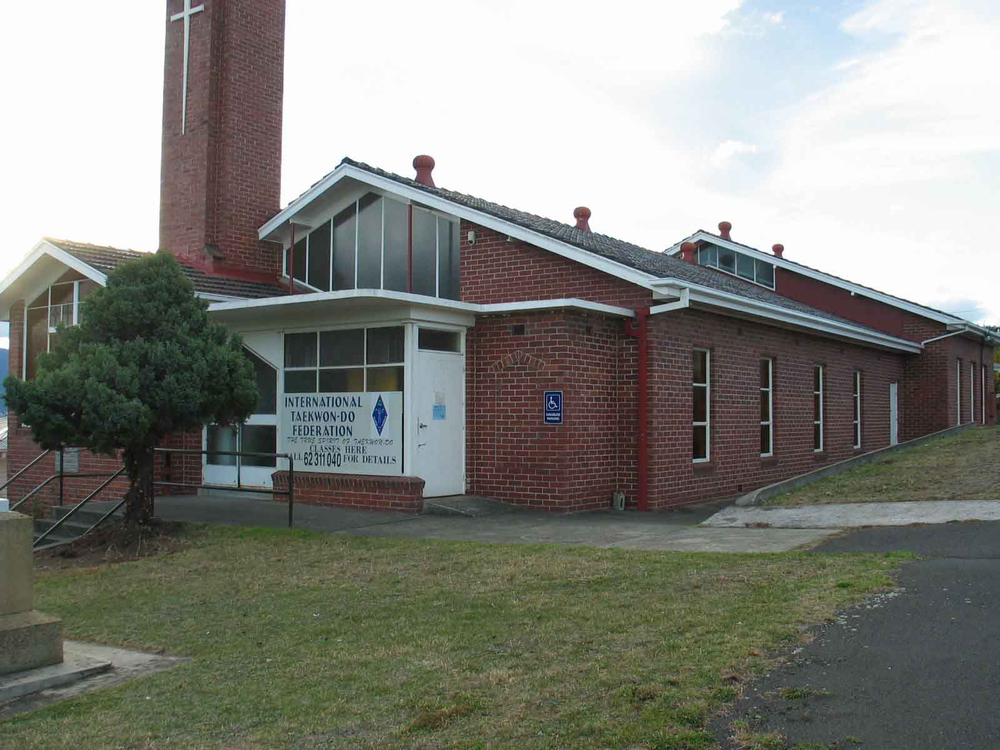

| » Club Location | Back |
|
Since 19th May 2008 we have been located at 12 Ashbolt Crescent in Lutana. This is about 7 minutes drive from Hobart central and can be easily reached by driving North along the Brooker hwy until you pass the Hockey grounds and the risdon rd intersection. Continue along the Brooker hwy and turn right at the next set of traffic lights into AShbolt Crescent which is signposted. The Dojang is clearly visible from the highway by its steeple with a cross on the side.  |
|